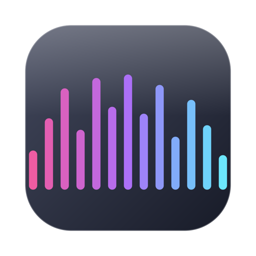
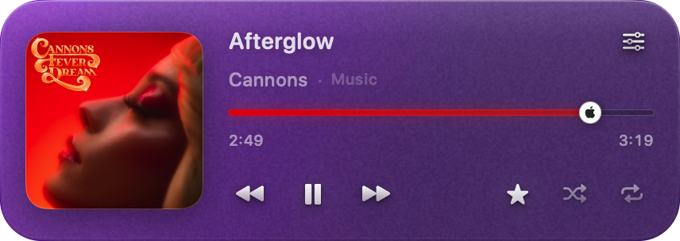
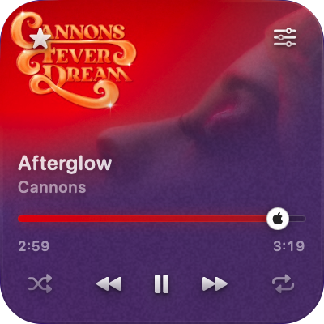
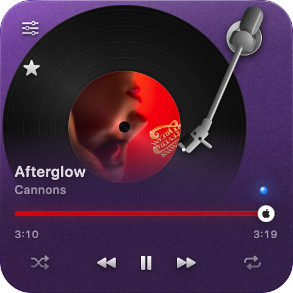
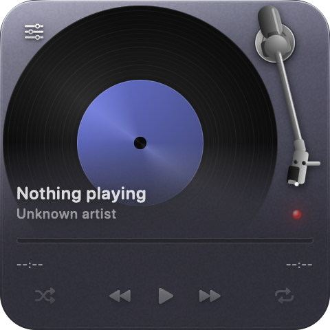
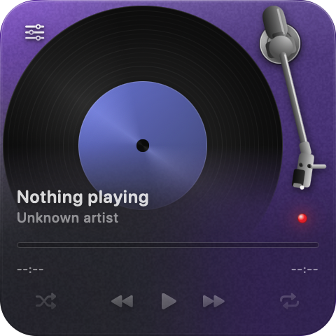
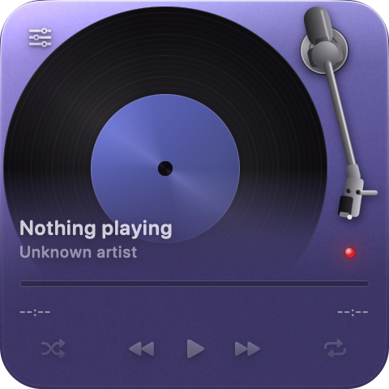

GlassDeck What works whereMac OS · free · universal
A floating pane of glass that shows what you're listening to and lets you drive it, without switching apps or hunting for the right window. It reads your music apps and your browser tabs, including the ones behind everything else.

Switch whenever you like. Everything below is a real screenshot, so you can see exactly how the glass behaves against a desktop rather than a mock-up.
Artwork, title, artist, a scrubber you can drag, and every control at once.

A square that fades the artwork in diagonally, controls in its corners.

The cover turning on a record, under a tonearm.
One line, as wide as you want it. The spectrum draws behind the words.
The same widget, four glass recipes. Every one of these is a preset you can pick in one click, and every value behind them is a slider you can move yourself.
Barely there. Thin material, almost no frost, a strong sheen along the rim.

Milky and solid. The desktop reads as light and colour rather than detail.

Heavier, with a contrast scrim underneath for busy wallpaper.

Thin glass carrying a heavy wash of colour pulled from the cover.
Play, skip, scrub, shuffle, repeat and favourite. Not a read-out you can only look at.
Your music can be three tabs deep behind everything else and still show up here.
Material, frost, tint, contrast, corner radius, sheen and grain, all live while you drag.
The tint follows the album art, so the widget shifts with whatever you put on.
Six visualiser styles drawn from the sound your Mac is already making. Or turn it off.
Float above other windows, show on every Space, and it remembers where you left it.
Desktop apps work with nothing to set up. Browsers need one switch flipped once, and the setup guide walks you through it.
Most other web players announce themselves in the same standard way and work too. How much you get varies by service.
Firefox gives no way for another app to ask what a page is doing, so music playing there is invisible. Opera needs its tab in front. The full picture, service by service.
Two of these are the mistakes people actually make, so they are worth reading before you start rather than after.
The window shows you where it goes.
Opening it in place runs it from the disk image. It then refuses to eject, and the app disappears when it finally does.
Three macOS permissions and one browser switch, each with what it buys you. None are mandatory: decline any and the widget still works, just with less detail.
Accessibility is the one worth granting. Without it the buttons stay greyed out.
A full menu bar makes macOS drop icons silently. Right-click the widget itself: settings, updates, the documents and the way to quit all live there too.
No account, no sign-in, no analytics, no telemetry. Nothing about you, your Mac or your listening is sent to the developer, because there is no server to send it to. No history of what you played is written down anywhere.
It makes four ordinary web requests and the privacy statement names all four, including the two you would not guess. Worth two minutes if you care, and you should.